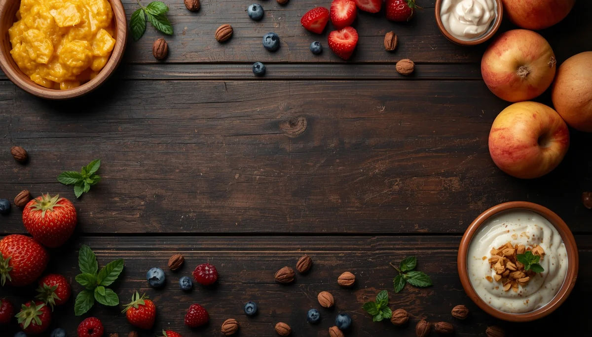

Alérgenos, Texturas y Menús del Primer Año
Cuarta y última parte: pautas para introducir alérgenos de forma segura, evolución hacia texturas avanzadas y ejemplos orientativos de menús saludables.

Índice de esta Guía
Contenidos de la cuarta parte:
1. Pautas modernas para la introducción segura de alérgenos
Las recomendaciones pediátricas actuales indican que retrasar la introducción de alimentos potencialmente alérgenos (como el huevo, el pescado, los frutos secos molidos o los derivados lácteos) no previene el desarrollo de alergias alimentarias. Al contrario, introducirlos de forma temprana y regular dentro del primer año puede reducir el riesgo de alergias.
Cómo introducirlos de forma segura:
- • Ofrecer el alimento nuevo en pequeñas cantidades (por ejemplo, una cucharadita o una pizca integrada) preferiblemente por la mañana, para poder vigilar cualquier reacción durante las horas siguientes.
- • Introducir un solo alimento nuevo a la vez, esperando de 24 a 48 horas antes de incorporar otro nuevo para identificar con claridad el origen en caso de que se produzca alguna reacción cutánea o digestiva.
- • En el caso de los frutos secos, nunca deben ofrecerse enteros o en trozos por el altísimo riesgo de atragantamiento, sino siempre molidos, en crema 100% pura y diluida, o bien triturados.
2. Evolución hacia texturas avanzadas y alimentos picados
A medida que el bebé se acerca a los 9-12 meses y adquiere más destreza masticatoria (aunque solo tenga un par de dientes incisivos, las encías tienen una fuerza considerable), es fundamental progresar en las texturas para evitar retrasos en el desarrollo logopédico y de la masticación:
- • Pasar de los purés totalmente finos a purés con grumos, alimentos chafados con tenedor y preparaciones blandas troceadas en pequeños pedazos manejables.
- • Ofrecer alimentos de consistencia fundente o porciones blandas de verduras cocidas, trozos de plátano o carnes tiernas desmigadas para estimular el reflejo de masticación lateral.
3. Ideas orientativas de menús saludables para el primer año
A partir de los 8-10 meses, combinando la leche materna o de fórmula como base, se pueden estructurar pautas de comidas principales equilibradas:
- • Comida del mediodía: puré o sólidos basados en verduras y hortalizas (calabacín, zanahoria, patata) acompañados de una fuente de proteína de alta calidad bien cocinada (como pollo desmigado, merluza sin espinas o trocitos de tortilla muy bien cuajada) y un chorrito de aceite de oliva virgen extra en crudo.
- • Merienda o desayuno: opciones sencillas como papillas de cereales integrales sin azúcares añadidos, fruta madura machacada o en bastones (plátano, pera, aguacate) y yogur natural sin azúcar.
4. Alimentos desaconsejados por seguridad alimentaria
Por motivos estrictos de salud pública y prevención de riesgos durante el primer año de vida, deben evitarse por completo:
- • Miel natural: desaconsejada antes del año por el riesgo grave de botulismo infantil.
- • Pescados grandes y azules de gran tamaño: (como el pez espada o emperador y el atún rojo) debido a sus altos niveles de acumulación de mercurio.
- • Verduras de hoja verde oscura: (como las espinacas o las acelgas) antes de los 12 meses (o limitadas estrictamente a una pequeña porción) por el riesgo de metahemoglobinemia debido a los nitratos.
- • Alimentos duros y redondos enteros: frutos secos enteros, uvas enteras, tomates cherry enteros o caramelos duros por el peligro crítico de asfixia.
Nota importante: Ante cualquier síntoma de reacción alérgica moderada o grave (como urticaria generalizada, inflamación de labios o dificultad respiratoria tras probar un alimento), acude de inmediato al servicio de urgencias pediátricas más cercano.